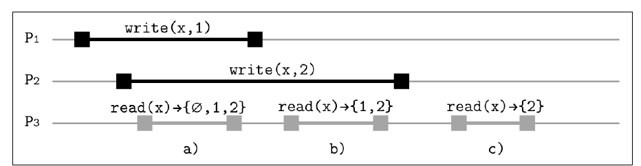
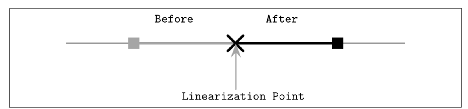
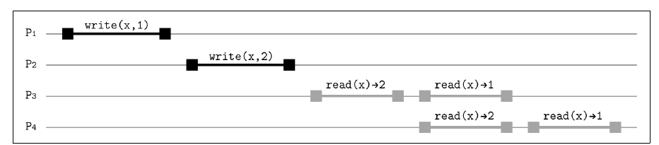
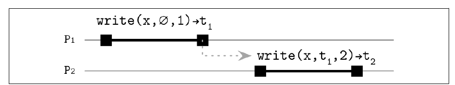

فصل ۱۱ · صص. ۲۱۵–۲۴۲
replication و consistency
Replication and Consistency
Database Internals, 1st Edition
مفهوم fault tolerance یعنی ادامه دادن درست به کار وقتی مؤلفهها میشکنند. نخستین قدمش برداشتن نقطههای شکست تنها از راه redundancy است، که کاربرها معمولاً نمیبینندش (ص. ۲۱۵). replication چند کپی از داده نگه میدارد. بهروز کردن اتمی همهی کپیها با consensus همارز و گران است، پس سیستمها راههای ارزانتری میجویند تا داده سازگار به نظر برسد و در همان حال کمی واگرایی مجاز باشد (ص. ۲۱۵). در deploymentهای چنددیتاسنتری، replication جغرافیایی با نگه داشتن کپیها نزدیک کلاینتها latency را هم پایین میآورد (صص. ۲۱۵–۲۱۶).
فصل اینها را میپوشاند:
- مفهوم availability و CAP: حالت CP در برابر AP، قاعدهی PACELC، دامهای CAP، و برداشت و بازده بهشکل جایگزینی نرمتر (صص. ۲۱۶–۲۱۹).
- پایههای حافظهی مشترک: register، یعنی ایمن و منظم و اتمی، و ترتیبدهی عملیات همزمان (صص. ۲۱۹–۲۲۲).
- مفهوم consistency modelها، از قویترین تا ضعیفترین (صص. ۲۲۳–۲۳۴):
- سختگیرانه، که ناممکن است؛
- مفهوم linearizability، با نقطههای خطیسازی و هزینهاش و ترکیبپذیریاش و RIFL؛
- ترتیبی؛
- علّی، با COPS و Eiger و ساعت برداری؛
- و مدلهای session، که در PRAM ترکیب میشوند.
- مفهوم eventual consistency و consistency قابل تنظیم با N و W و R و quorum و replicaهای شاهد (صص. ۲۳۴–۲۳۷).
- مفهوم eventual consistency قوی با CRDT: شمارندهی G-Counter و PN-Counter، register از جنس LWW و چندمقداری، مجموعهی G-Set و مجموعههای دوفازی، و CRDTهای JSON (صص. ۲۳۸–۲۴۰).
فهرست خود فصل (از فهرست مطالب کتاب)
- رسیدن به availability — ص. ۲۱۶
- بخش CAP بدنام — ص. ۲۱۶
- بخش CAP را با دقت به کار ببرید — ص. ۲۱۷
- برداشت و بازده — ص. ۲۱۸
- حافظهی مشترک — ص. ۲۱۹
- ترتیبدهی — ص. ۲۲۱
- بخش consistency modelها — ص. ۲۲۲
- بخش consistency سختگیرانه — ص. ۲۲۳
- بخش linearizability — ص. ۲۲۳
- بخش consistency ترتیبی — ص. ۲۲۷
- بخش consistency علّی — ص. ۲۲۹
- مدلهای session — ص. ۲۳۳
- بخش eventual consistency — ص. ۲۳۴
- بخش consistency قابل تنظیم — ص. ۲۳۵
- بخش replicaهای شاهد — ص. ۲۳۶
- بخش eventual consistency قوی و CRDT — ص. ۲۳۸
- خلاصه — ص. ۲۴۰
از کتاب
مقدمه
سیستمهایی که یک سرچشمهی حقیقت دارند صریح failover میکنند، با ارتقای replicaیی. بقیه چیدمان دوباره لازم ندارند و با جمع کردن پاسخ از چند شرکتکننده سازگار میمانند (ص. ۲۱۵). replication سه رویداد را در بر دارد: نوشتن و بهروزرسانی replica و خواندن. حتی اگر replicaها پس از برگشتن نوشتن کلاینت بهروز شوند، کلاینت باز هم باید عملیات را به ترتیبی معین مشاهده کند (ص. ۲۱۶).
از کتاب
رسیدن به availability
شکستهای متناوب نباید روی availability اثر بگذارند: از دید کاربرها، سیستم باید همینطور انگار چیزی رخ نداده کار کند (ص. ۲۱۶). نرمافزار زیر بانکداری و ارتباط و سفر را گرفته، پس از دسترس خارج بودن مشتری و پول خرج دارد (ص. ۲۱۶). availability redundancy لازم دارد، که بهنوبت مسئلهی همگام کردن کپیها و بازیابیشان را میسازد (ص. ۲۱۶).
از کتاب
قاعدهی بدنام CAP
مفهوم availability: هر درخواستی در غایت پاسخی موفق میگیرد. consistency اینجا یعنی linearizability (ص. ۲۱۶). حدس CAP بروئر، که گیلبرت و لینچ اثباتش کردند، میگوید که زیر پارتیشن شبکه سیستمی نمیتواند هر دو را تضمین کند. سیستمها یا consistency قوی با availability بهترینتلاش را برمیدارند، یا availability با consistency بهترینتلاش. «بهترین تلاش» یعنی تضمینها وقتی چیزی نمیشکند برقرارند و میتوانند در پارتیشن ضعیف شوند (ص. ۲۱۷).
| انتخاب | رفتار (ص. ۲۱۷) | نمونه |
|---|---|---|
| CP | بهجای سرویس دادن دادهی شاید ناسازگار درخواستها را میشکند | consensus که اکثریتی میخواهد |
| AP | مقدارهای شاید ناسازگار سرویس میدهد | دیتابیسی که تا هر replicaیی سرپاست نوشتن میپذیرد؛ میتواند داده گم کند |
قاعدهی PACELC از ابادی این را گسترش میدهد: با پارتیشنی، availability یا consistency را بردارید؛ وگرنه، latency یا consistency را (ص. ۲۱۷).
قاعدهی بدنام CAP
قاعدهی CAP را با دقت به کار ببرید
- قاعدهی CAP دربارهی پارتیشن است و نه از کار افتادن. نودی پارتیشنشده میتواند دادهی ناسازگار سرویس بدهد؛ و نودی از کار افتاده چیزی سرویس نمیدهد. پس مسئلههای consistency میتوانند با همهی نودها سرپا رخ بدهند (صص. ۲۱۷–۲۱۸).
- آن تصویر مثلثی گمراه میکند. میشود C را با A بدهبستان کرد، ولی partition tolerance تنظیمشدنی نیست (ص. ۲۱۸).
- حرف C در CAP نه C در ACID است، یعنی نگه داشتن ناوردا، و Aش نه availability بالا: CAP هیچ کرانی روی latency نمیگذارد و میخواهد هر نود نشکستهای پاسخ بدهد (ص. ۲۱۸).
- دیتابیسهایی که AP نامیده میشوند باز هم وقتی replicaهای کافی زنده باشند و درست به کار بروند، مثلاً با quorum، نتیجههای سازگار سرویس میدهند. قاعدهی CAP یک سرانگشتی است (ص. ۲۱۸).
قاعدهی بدنام CAP
برداشت و بازده
فاکس و بروئر هر دو خاصیت را به سنجههایی تنظیمپذیر شل میکنند (ص. ۲۱۹):
| سنجه | معنا |
|---|---|
| برداشت | پاسخ چقدر کامل است: برگرداندن ۹۹ ردیف از ۱۰۰ میتواند از شکستن بهتر باشد |
| بازده | درخواستهای موفق تقسیم بر درخواستهای کوشیده. مثل بالا بودن نیست: نودی مشغول بالاست ولی باز هم میتواند درخواست را بشکند |
بازده را با پاسخ دادن تنها از پارتیشنهای موجود بالا ببرید، تا وقتی برخی نودها خواباند کاربرهای دیگر همینطور سرویس بگیرند. یا برداشت کامل را تنها برای دادهی حیاتی بخواهید (ص. ۲۱۹).
از کتاب
حافظهی مشترک
از دید کلاینتها، انبارهای توزیعشده مثل حافظهی مشترک به نظر میرسد، یعنی آرایهای از register. هر عملیاتی رویدادی فراخوانی و تمام شدن دارد، و اگر processاش پیش از تمام شدن از کار بیفتد میشکند (ص. ۲۱۹). دو عملیات ترتیبیاند اگر یکی پیش از فرا خوانده شدن آن یکی تمام شود، و در غیر این صورت همزمان، از جمله وقتی یکی دیرتر شروع و زودتر تمام شود (شکل ۱۱-۱) (صص. ۲۱۹–۲۲۰).
| register | در میانهی نوشتنی همزمان، خواندنی میتواند … برگرداند (ص. ۲۲۰) |
|---|---|
| ایمن | هر مقداری در بازهی register: registerی دوگانی میتواند «سوسو» بزند |
| منظم | مقدار آخرین نوشتن تمامشده یا مقدار آن نوشتن همپوشان؛ یکجا برای همهی خوانندهها دیدنی نیست، مثل یک اصلی با replicaهای خواندن |
| اتمی | linearizable: لحظهای قدیم را برای همه از تازه جدا میکند |
از کتاب
ترتیبدهی
هر processی عملیاتش را ترتیبی اجرا میکند، و با هم یک تاریخ جهانی میسازند که در آن عملیات میتوانند همزمان اجرا شوند (ص. ۲۲۱). با P1 که write(x, 1); read(x) میکند و P2 که read(x)، آن نوشتن میتواند پیش از هر دو خواندن تمام شود، یا لابهلایشان برود، یا پس از هر دو بیاید (ص. ۲۲۱). دو دشواری هست: عملیات میتوانند همپوشان باشند، و اثر عملیات ناهمپوشان میتواند فوری دیدنی نباشد. consistency modelها آن ابهام را حل میکنند (صص. ۲۲۱–۲۲۲).
از کتاب
مفهوم consistency modelها
مفهوم consistency model قراردادی میان شرکتکنندههاست: اینکه replicaها چه باید بکنند، و کلاینتها از خواندن و نوشتن چه میتوانند چشم داشته باشند (ص. ۲۲۲). «همهی تاریخهای ممکن» را از «تاریخهای مجاز زیر مدل X» جدا میکند. مدلها میتوانند state-based باشند، یعنی کدام ناوردا میان کپیها برقرار است، یا عملیاتمحور، یعنی قید روی ترتیب عملیات (ص. ۲۲۲). بی ساعتی جهانی، هر شرکتکنندهای نمای خودش از حالت و زمان دارد، مثل نسبیت خاص برای داده. synchronization latency و CPU و I/O دیسک و شبکه و انتظار خرج دارد (صص. ۲۲۲–۲۲۳).
مفهوم consistency modelها
مفهوم consistency سختگیرانه
هر نوشتنی فوری برای هر خواندن بعدی دیدنی است، که با ساعتی جهانی سنجیده میشود. بهخاطر فیزیک پیادهکردنی نیست (ص. ۲۲۳).
مفهوم consistency modelها
linearizability
قویترین مدل تکobjectی و تکعملیاتی (ص. ۲۲۳).
- اثر نوشتنی دقیقاً یک بار برای همهی خوانندهها دیدنی میشود، در نقطهای میان شروع و پایانش. هیچکس نوشتن جزئی یا ناتمام نمیبیند (ص. ۲۲۳).
- عملیات همپوشان میتوانند به هر ترتیبی اثر کنند. همین که خواندنی مقداری برگرداند، هر خواندن بعدی همان مقدار یا تازهتر را برمیگرداند (ص. ۲۲۳).
- اثرها نمیتوانند پیش از شروع عملیاتی پیدا شوند، که غیبگویی لازم میداشت، و باید پیش از تمام شدنش پیدا شوند (صص. ۲۲۳–۲۲۴).
- هم ترتیب هر processی و هم ترتیب real-time بین processها را محترم میشمارد، که ترتیبی کلی میدهد. نوشتنهای linearizable طرد متقابل را میرسانند (ص. ۲۲۴).
شکل ۱۱-۲: process P1 عملیات write(x, 1) را اجرا میکند، P2 عملیات write(x, 2) را، P3 سه خواندن، و x از ∅ شروع میکند (ص. ۲۲۴):


| خواندن | با چه همپوشان است | چه میتواند برگرداند |
|---|---|---|
| اول | هر دو نوشتن در پرواز | ∅ یا ۱ یا ۲ |
| دوم | نوشتن ۱ تمام، نوشتن ۲ در پرواز | ۱ یا ۲ |
| سوم | هر دو تمام؛ نوشتن ۲ پس از نوشتن ۱ مرتب شده | ۲ |
نقطهی خطیسازی (صص. ۲۲۵–۲۲۶): عملیات لحظهای نیستند، ولی اثرشان لحظهای به نظر میرسد. پس از آن نقطه، هر processی مقدار تازه یا بعدتر را میبیند، پس خواندن کهنهای نیست، خواندنها یکنوا هستند، و مقدارها در میان نمیروند. اثر عملیات باید میان t₁، یعنی فرستادن درخواست، و t₂، یعنی گرفتن پاسخ، دیدنی شود (شکلهای ۱۱-۳ و ۱۱-۴). قفل یا اولیههای خواندن و نوشتن اتمی یا خواندنتغییرنوشتن آن نقطه را پیاده میکنند (ص. ۲۲۵).


Vault note: کادر کناری کتاب دربارهی CAS (ص. ۲۲۵). عبارت compare-and-swap مقداری را تنها وقتی عوض میکند که عوض نشده باشد. مراقب مسئلهی ABA باشید: اگر دو نوشتن دیگر A را به B و برگردانند به A، CASی که چشم A دارد باز هم موفق میشود.
هزینه (ص. ۲۲۶):
- حتی پردازندهها پیشفرض دسترسی linearizable به حافظه نمیدهند، چون دستورهای synchronization کنداند و ترافیک بینهستهای و بیاعتبار شدن cache میسازند.
- کد همزمان به آن میرسد با آماده کردن نتیجهای و منتشر کردنش با CAS، چنانکه در queueی بیقفل.
- سیستمهای توزیعشده consensus لازم دارند: یک ماژول consensus تأمین میکند که عملیات یکسان در کل cluster اعمال شوند.
- مفهوم linearizability محلی یعنی ترکیبپذیر است: اگر هر objectی linearizable باشد، سیستم هم هست. عملیات چندobjectی باز هم synchronization اضافه لازم دارند (ص. ۲۲۶).
روش RIFL، یعنی Reusable Infrastructure for Linearizability، RPCها را linearizable میکند (ص. ۲۲۷):
- هر پیامی با یک ID کلاینت بهعلاوهی شمارهی ترتیب کلاینتمحلی شناسایی میشود. IDها از leaseهایی میآیند که سرویسی سیستمسراسری صادر میکند، و عملیاتی که با lease منقضی فرستاده شود commit نمیشود.
- بی RIFL، نوشتن V1 از C1 وقتش سر میرود، C2 مقدار V2 را مینویسد، و کوشش دوبارهی C1 برای V1 روی V2 مینویسد، و نوشتن C2 گم میشود. با RIFL، کوشش دوباره بهجای اجرای دوباره همان object تمام شدن ذخیرهشده را برمیگرداند.
- همهی objectهای تمام شدن پایا ذخیره میشوند و اتمی با تغییر داده ساخته. تا وقتی کلاینت قول بدهد دوباره نکوشد یا از کار افتاده تشخیص داده شود زندگی میکنند.
- کلاینتها leaseها را تمدید میکنند تا زنده بودن را خبر بدهند. leaseهای منقضی garbage collectorی میشوند.
- تضمین حداکثر یک اجرا، بهعلاوهی دیدنی بودن اتمی، عملیات را linearizable میکند، بیشتر مستقل از سیستم ذخیرهسازی (ص. ۲۲۷).
مفهوم consistency modelها
مفهوم consistency ترتیبی
عملیات چنان مرتب میشوند که انگار در یک دنباله اجرا شدهاند که ترتیب برنامهی هر processی را نگه میدارد. نمای processی میتواند جهانی هر قدر کهنه باشد (صص. ۲۲۷–۲۲۸). Lamport این را برای چندپردازندهها معرفی کرد: درخواستها به یک خانهی حافظه FIFO مرتب میشوند، ترتیب جهانیای بین خانههای مستقل نیست، و خواندنها میتوانند از آن خانه یا از تازهترین نوشتن در صف بیایند (ص. ۲۲۸). نکتهی مغزی: همهی processها همان ترتیب را مشاهده میکنند (ص. ۲۲۸).
Vault note: مقایسهی کتاب (ص. ۲۲۸). هر دو مدل ترتیبی جهانی میخواهند، ولی linearizability زمان واقعی را هم محترم میشمارد. زیر consistency ترتیبی، ترتیب تنها برای نوشتنهای یک خاستگاه تضمین میشود. تاریخهای linearizable ترکیب میشوند؛ و ترتیبیسازگارها نه.
شکل ۱۱-۵ نشان میدهد که write(x, 1) به ساعت دیواری پیش از write(x, 2) رخ میدهد، ولی هم P3 و هم P4 اول ۲ و بعد ۱ را مشاهده میکنند. هر ترتیبی معتبر است تا وقتی هر خوانندهای همان را ببیند. خواندن کهنه میتواند از replicaهایی بیاید که همان ترتیب را در زمانهای مختلف میگیرند (صص. ۲۲۸–۲۲۹). پردازندهها هم consistency ترتیبی را تضمین نمیکنند و سد حافظه، یعنی fence، لازم دارند (ص. ۲۲۹).


مفهوم consistency modelها
مفهوم consistency علّی
عملیات علّیتدار به همان ترتیب به دید همه میرسند؛ و همزمانها میتوانند به ترتیبهای مختلف دیده شوند (ص. ۲۲۹).
- بی علیت (شکل ۱۱-۶)، process P3 میتواند اول ۱ و بعد ۲ را ببیند در حالی که P4 اول ۲ و بعد ۱ (ص. ۲۳۰).
- با علیت (شکل ۱۱-۷)، نوشتنی وابستگیهایش را حمل میکند:
write(x, ∅, 1) → t1، بعدwrite(x, t1, 2). نوشتنی که زود برسد تا رسیدن وابستگیهایش نگه داشته میشود، پس رابطهی پیشازرخدادن منطقی و بی ساعت فیزیکی برپا میشود (صص. ۲۳۰–۲۳۱).


- قیاسش رشتهای در انجمن است: پاسخها از آن چیزی که پاسخش میدهند پی میگیرند، و رشتهها میتوانند شاخه بزنند (ص. ۲۳۱).
- سیستمهای علّی تضمینهای session را که زیر فهرست شدهاند میدهند (ص. ۲۳۱).
- پیادهسازی: ساعت منطقی بهعلاوهی metadata بافتار در هر پیامی. سروری عملیاتی را تنها پس از همهی پیشینهایش اعمال میکند و هر چیزی را که زیادی زود برسد buffer میکند (ص. ۲۳۱).
| سیستم | چه چیزی را پی میگیرد | تعارضها (ص. ۲۳۱) |
|---|---|---|
| COPS | وابستگیها از راه نسخهی کلید | ترتیب کلید بهعلاوهی تابعهای برنامهویژه |
| Eiger | ترتیب عملیات، از جمله بین نودها، یعنی تراکنشهای چندپارتیشنی | آخریننوشتنمیبرد |
ساعتهای برداری (صص. ۲۳۲–۲۳۳):
- پیامهای {M1(∅, t1), M2(M1, t2), M3(M2, t3)} که بیترتیب برسند تا رسیدن وابستگیهایشان buffer میشوند. سیستمهای Dynamo و Riak برای این ساعت برداری به کار میبرند.
- هر processی یک ساعت منطقی برای هر processی نگه میدارد. مال خودش را سر هر رویدادی میافزاید، و سر گرفتن بیشینهی عنصربهعنصر را برمیدارد.
- سر نوشتنی، اگر مقداری از قبل محلی وجود داشته باشد، نسخهای تازه به بردار نسخه افزوده میشود، که آن دو را علّی پیوند میدهد. وگرنه زنجیرهای تازه شروع میشود.
- برای بهتر کردن دسترسپذیری، replicaها میتوانند نوشتنهای متعارض بپذیرند، که تاریخهای واگرا میسازد. شکل ۱۱-۹ نشان میدهد که یک replica ۱ و ۵ و ۷ و ۸ را میبیند و دیگری ۱ و ۵ و ۳. سیستم Riak اینها را به کاربرها عرضه میکند (ص. ۲۳۲).
- ساعتهای برداری تعارض را تشخیص میدهند ولی حلشان نمیکنند. حل برنامهویژه است و تاریخ علّی ذخیرهشده بهعلاوهی garbage collectorی لازم دارد، پس Cassandra در عوض آخریننوشتنمیبرد را برداشت (ص. ۲۳۳).
امتحان کنید
ساعت برداری و تحویل علّی
باز کردن در صفحهی کامل ↗ · این شبیهسازی مدل خود vault از سازوکاری است که کتاب شرح میدهد.
مفهوم consistency modelها
مدلهای session
مدلهای session، که کلاینتمحورند، وصف میکنند که یک کلاینت در حال حرف زدن با replicaهای شاید مختلف چه مشاهده میکند. عملیات هر کلاینتی ترتیبی است، و دربارهی عملیات ناتمام چیزی فرض نمیشود (ص. ۲۳۳).
| مدل | تضمین (صص. ۲۳۳–۲۳۴) |
|---|---|
| خواندن نوشتههای خود | خواندنی پس از write(x, V)، روی هر replicaیی، مقدار V یا بعدتر را برمیگرداند |
| خواندن یکنوا | پس از مشاهدهی V، خواندنهای بعدی V یا چیزی تازهتر را برمیگردانند |
| نوشتن یکنوا | نوشتنهای کلاینتی به ترتیب خودش برای همه دیدنی میشوند؛ وگرنه دادهی قدیم میتواند «رستاخیز» کند |
| نوشتن از خواندن پی میگیرد که علیت session است | نوشتنی پس از آن نوشتنهایی مرتب میشود که خواندنهای پیشینش مشاهده کرده بودند |
اینها دربارهی کلاینتهای دیگر چیزی نمیگویند، ولی باید برای هر کلاینتی برقرار باشند (ص. ۲۳۴). consistency PRAM که FIFO هم است برابر خواندن یکنوا بهعلاوهی نوشتن یکنوا بهعلاوهی خواندن نوشتههای خود است: نوشتنهای یک process به ترتیب پخش میشوند، در حالی که نوشتنهای processهای مختلف میتوانند به ترتیبهای مختلف دیده شوند (ص. ۲۳۴).
مفهوم consistency modelها
eventual consistency
بهروزرسانیها asynchronous پخش میشوند. اگر بهروزرسانی تازهای نرسد، در غایت همهی دسترسیها تازهترین مقدار را برمیگردانند، از وگلز. تعارضها با آخریننوشتنمیبرد یا ساعت برداری آشتی داده میشوند، که میتواند عوض کند چه چیزی «تازهترین» به حساب میآید (ص. ۲۳۴). واژهی «در غایت» کران زمانی ندارد، ولی در عمل خوب کار میکند (صص. ۲۳۴–۲۳۵).
warehouse ما دو replica دارد: insert به یکی میرود و از راه ClickHouse Keeper به دیگری replicate میشود.
?نوبت شما · داشبوردی بلافاصله بعد از load از replica دیگر میخواند و ردیفهای تازه را نمیبیند. این چه مدلی است و چطور درستش میکنید؟دیدن پاسخ
replication asynchronous است و آن replica هنوز part را fetch نکرده؛ این eventual consistency است و read-your-writes نیست. یا insert را با insert_quorum بنویسید، یا خواندنهای حساس را با select_sequential_consistency به replica بهروز بفرستید (صص. ۲۲۲–۲۳۵).
از کتاب
مفهوم consistency قابل تنظیم
سیستمهای سازگار غایی معمولاً میگذارند consistency را با سه متغیر تنظیم کنید (ص. ۲۳۵):
| متغیر | معنا |
|---|---|
| N که ضریب replication است | نودهایی که کپیای ذخیره میکنند |
| W که consistency نوشتن است | تأییدهایی که برای موفق شدن نوشتنی لازم است |
| R که consistency خواندن است | پاسخهایی که برای موفق شدن خواندنی لازم است |
- شرط R + W > N تضمین میکند که مجموعههای خواندن و نوشتن همپوشاناند، پس خواندنی تازهترین نوشتن را میبیند. با N = 3 و W = 2 و R = 2 یک شکست تحمل میشود. replica سوم asynchronous یا با anti-entropy از فصل ۱۲ بهروز میشود (ص. ۲۳۵).
- آن coordinator نوشتنها را به N نود میدهد و منتظر W میماند، یا W − 1 اگر خودش replicaیی باشد. مقدار R پاسخ خواندن را جمع میکند. اجرای حدسی درخواست خواندن اضافه میفرستد و هر پاسخی را که اول بیاید به حساب میآورد (ص. ۲۳۵).
- حالت W = 1 و R = N به سیستمهای پرنوشتن میخورد ولی برای خواندن هر replicaیی لازم است. حالت W = N و R = 1 میگذارد هر نودی تازهترین مقدار را سرویس بدهد (صص. ۲۳۵–۲۳۶).
- سطحهای بالاتر یعنی latency بیشتر و نیازمندی availability سختگیرانهتر؛ و سطحهای پایینتر یعنی availability بیشتر و consistency کمتر (ص. ۲۳۶).
مفهوم quorumها (ص. ۲۳۶): تعداد ⌊N/2⌋ + 1 نود اکثریتی میسازند. با 2f + 1 نود، تا f تا میتوانند بشکنند. سیستمی quorumی نمیتواند از دست دادن اکثریتی را جان به در ببرد: با ۳ replica و ۲ خواب، چیزی پیش نمیرود. quorumها پس از نوشتنهای ناتمام یکنوا نیستند: نوشتنی که به ۱ از ۳ replica رسیده میتواند برگردانده شود یا نه، بسته به اینکه خواندنی با کدام replicaها تماس میگیرد، پس مقدارها میتوانند در میان بروند. خواندن یکنوا read repair بندآور لازم دارد، به بهای دسترسپذیری، از فصل ۱۲ (ص. ۲۳۶).
insert_quorum همان W کتاب است: چند replica باید نوشتن را تأیید کنند.
?نوبت شما · با دو replica insert_quorum=2 گذاشتهاید و یکی برای ارتقا down است. چه میشود؟دیدن پاسخ
insert fail میشود: availability را با consistency عوض کردهاید. با N=2 و W=2 هر نوشتن به همهی replicaها نیاز دارد؛ برای ارتقا یا W را موقتاً کم کنید یا loadها را عقب بیندازید (صص. ۲۳۵–۲۳۶).
امتحان کنید
quorum و replicaهای شاهد
باز کردن در صفحهی کامل ↗ · این شبیهسازی مدل خود vault از سازوکاری است که کتاب شرح میدهد.
از کتاب
نقش replicaهای شاهد
اکثریتها همپوشانی را تضمین میکنند، ولی هر replicaیی کپی کامل ذخیره میکند، پس RF = 5 یعنی پنج کپی (ص. ۲۳۶). replicaهای شاهد معمولاً تنها این واقعیت را ذخیره میکنند که نوشتنی رخ داده. وقتی replicaهای کپی وقتشان سر برود یا بشکنند، شاهدی ارتقا مییابد تا موقت آن رکورد را داشته باشد، و همین که تعمیر کپیها را بهروز کند برمیگردد (صص. ۲۳۶–۲۳۷).
نمونهی کتاب با [1c, 2c, 3w] (ص. ۲۳۷):
- نوشتن در حالی که 2c خواب است: رکورد را موقت روی 3w ذخیره کن، بعدتر 2c را تعمیر کن، بعد کپی آن شاهد را بینداز.
- خواندن وقتی رکورد روی 1c و 3w است ولی روی 2c نه: هر دو نودی quorumی میسازند. با [1c, 2c]، از 1c بگیر و 2c را تعمیر کن. با [2c, 3w]، از 3w بگیر.
تعداد n کپی بهعلاوهی m replica شاهد همان availability n + m کپی را میدهند اگر (ص. ۲۳۷):
- خواندن و نوشتن اکثریت، یعنی N/2 + 1، به کار ببرند؛
- هر quorumی دستکم یک replica کپی داشته باشد.
سیستمهای Spanner و Cassandra شاهد پیاده میکنند (ص. ۲۳۷).
از کتاب
مفهوم eventual consistency قوی و CRDT
مفهوم eventual consistency قوی که SEC است میان consistency قوی و غایی مینشیند. بهروزرسانیها میتوانند دیر یا بیترتیب برسند، ولی همین که همهشان برسند، replicaها در همان حالت معتبر merge میشوند (ص. ۲۳۸). نوع دادههای تکرارشدهی بیتعارض، یعنی CRDT از شاپیرو و همکاران که در Redis به کار میرود، میتوانند عملیات را به هر ترتیبی با همان نتیجه اعمال کنند. مثلاً شمارندههای تکرارشده میتوانند در میانهی پارتیشنی مستقل افزوده شوند و بعد بی گم کردن چیزی merge (ص. ۲۳۸).
عملیاتمحورها، یعنی CmRDT، لازم دارند که عملیات (ص. ۲۳۸):
- بیاثر جانبی باشند؛
- مفهوم commutative باشند، یعنی x • y = y • x؛
- علّی مرتب باشند: تنها وقتی تحویل شوند که آن حالتی که لازم دارند رسیده باشد.
ساختار G-Counter، یعنی شمارندهی فقطرشدی: هر نودی برداری از آخرین شمارشهای معلوم نگه میدارد و تنها خانهی خودش را بهروز میکند. merge بیشینهی عنصربهعنصر را برمیدارد، و مقدار جمع است (ص. ۲۳۹):
| قدم | نود ۱ | نود ۲ | نود ۳ |
|---|---|---|---|
| آغازین | [0, 0, 0] | [0, 0, 0] | [0, 0, 0] |
| افزودن روی ۱ و ۳ | [1, 0, 0] | [0, 0, 0] | [0, 0, 1] |
| پس از mergeها | [1, 0, 1] | [1, 0, 1] | [1, 0, 1] ← جمع برابر ۲ |
| CRDT | چطور (صص. ۲۳۹–۲۴۰) |
|---|---|
| PN-Counter | دو بردار: P برای افزودن و N برای کاستن. ابرهمتاها از پخش شدن بردارهای غولآسا میپرهیزند |
| register از جنس LWW | مقداری را با بزرگترین timestamp جهانیمرتب نگه دار؛ آن merge commutative است |
| register چندمقداری | همهی مقدارهای همزمان را نگه دار؛ برنامه یکی را برمیدارد |
| G-Set | مجموعهی فقطرشدی؛ اجتماع commutative است |
| مجموعهی دوتایی با افزودن و برداشتن | تنها عنصرهای مجموعهی افزودن میتوانند به مجموعهی برداشتن وارد شوند؛ مقدار برابر مجموعهی افزودن منهای مجموعهی برداشتن |
| CRDT از جنس JSON | درج و حذف و انتساب روی فهرستها و نقشههای تودرتو، که روی کلاینت به هر ترتیبی merge میشوند، از کلپمان |
امتحان کنید
شمارندهها و مجموعههای CRDT
باز کردن در صفحهی کامل ↗ · این شبیهسازی مدل خود vault از سازوکاری است که کتاب شرح میدهد.
از کتاب
خلاصه
مفهوم replication availability را بهتر میکند ولی همآهنگی لازم دارد (ص. ۲۴۰). مدلهای تکعملیاتی، از پرتضمینترین تا کمتضمینترین (صص. ۲۴۰–۲۴۱):
flowchart LR
L["Linearizability<br/>instantaneous, real-time order"] --> S["Sequential<br/>one total order, per-process order kept"] --> C["Causal<br/>causally related ops in the same order"] --> P["PRAM / FIFO<br/>per-process order; others may differ"]مدلهای session: خواندن نوشتههای خود، خواندن یکنوا، نوشتن یکنوا و نوشتن از خواندن پی میگیرد (ص. ۲۴۱). روی هم چیدن سیستمهای ضعیفتر روی قویترها، یا نادیده گرفتن consistency سیستمهای زیرین، میتواند ناسازگاری جبراننشدنی و گم شدن داده بسازد (ص. ۲۴۱).
مرور
بدهبستانها در یک نگاه
| مدل | ترتیب real-time | همان ترتیب برای همه | ترکیبپذیر | هزینهی همآهنگی |
|---|---|---|---|---|
| linearizable | ✓ | ✓ | ✓ | بالاترین، یعنی consensus |
| ترتیبی | ✗ | ✓ | ✗ | بالا |
| علّی | ✗ | تنها علّیتدارها | — | metadata وابستگی |
| PRAM | ✗ | تنها برای هر نویسندهای | — | کم |
| غایی | ✗ | ✗، در غایت همگرا میشود | — | کمترین |
| غایی قوی با CRDT | ✗ | قطعی همگرا میشود | — | metadata مربوط به merge |
| N و W و R | چه تحمل میشود | یادداشت |
|---|---|---|
| ۳ و ۲ و ۲ | یک شکست برای خواندن و نوشتن | همپوشانی تضمینشده |
| ۳ و ۱ و ۳ | نوشتن: ۲ شکست؛ خواندن: هیچ | پرنوشتن |
| ۳ و ۳ و ۱ | نوشتن: هیچ؛ خواندن: ۲ شکست | پرخواندن |
| ۳ و ۱ و ۱ | زیاد | شرط R + W ≤ N: خواندن کهنه ممکن است |
مرور
نکتههای کلیدی
- قاعدهی CAP: در میانهی پارتیشنی نمیشود هم دسترسپذیری، یعنی پاسخ هر نود نشکستهای، و هم linearizability را داشت. partition tolerance پیچی نیست که بچرخانید (صص. ۲۱۷–۲۱۸).
- مفهوم C و A در CAP نه C در ACIDاند و نه «availability بالا»ی روزمره. availability CAP کران latencyی ندارد و میخواهد هر نود نشکستهای پاسخ بدهد (ص. ۲۱۸).
- برداشت یعنی تمامیت پاسخ؛ و بازده یعنی سهم درخواستهایی که موفق میشوند. بدهبستانشان اغلب از یکسر شکستن بهتر است (ص. ۲۱۹).
- مفهوم linearizability: هر عملیاتی در یک نقطه میان فراخوانی و تمام شدن اثر میکند، پس پس از نوشتنی تمامشده خواندن کهنهای نیست. بین objectها ترکیب میشود ولی همآهنگی لازم دارد، که معمولاً consensus است (صص. ۲۲۳–۲۲۶).
- مفهوم consistency ترتیبی ترتیب هر processی را نگه میدارد و به همهی خوانندهها همان ترتیب را میدهد، ولی کران real-time نه، و ترکیب نمیشود (صص. ۲۲۷–۲۲۹).
- مفهوم consistency علّی تنها عملیات علّیتدار را مرتب میکند؛ ساعتهای برداری concurrency را تشخیص میدهند ولی نمیتوانند حلش کنند، که از همینجاست که Cassandra آخریننوشتنمیبرد به کار میبرد (صص. ۲۲۹–۲۳۳).
- شرط R + W > N همپوشانی را تضمین میکند، ولی خواندنهای quorum پس از نوشتنی ناتمام یکنوا نیستند مگر read repair بند بیاورد (صص. ۲۳۵–۲۳۶).
- مفهوم n کپی بهعلاوهی m replica شاهد availability n + m کپی را میدهند، تا وقتی هر اکثریتی دستکم یک کپی داشته باشد (ص. ۲۳۷).
- همهی CRDTها commutative merge میکنند، پس replicaها میتوانند آزاد واگرا شوند و باز هم بی گم کردن عملیات همگرا (صص. ۲۳۸–۲۴۰).
تمرین
خودتان را بسنجید
پرسشها و پاسخها مال vault است و از روی یادداشتهای بالا نوشته شده؛ پاسخها به صفحههای کتاب ارجاع میدهند.
۱چرا partition tolerance در CAP انتخابی واقعی نیست؟دیدن پاسخ
پارتیشنها رخ میدهند، برداریدشان یا نه. آن چیزی که بدهبستانشدنی است consistency در برابر availability در میانهی پارتیشنی است (ص. ۲۱۸).
۲مفهوم availability CAP با «availability بالا» چه تفاوتی دارد؟دیدن پاسخ
availability CAP هیچ کرانی روی latency نمیگذارد و میخواهد هر نود نشکستهای به هر درخواستی پاسخ بدهد. availability بالا هیچکدام را نمیخواهد (ص. ۲۱۸).
۳تفاوت برداشت و بازده چیست؟دیدن پاسخ
برداشت یعنی پاسخی چقدر کامل است، مثل ۹۹ ردیف از ۱۰۰؛ و بازده یعنی سهم درخواستهایی که موفق میشوند (ص. ۲۱۹).
۴در شکل ۱۱-۲، چرا خواندن سوم تنها میتواند ۲ برگرداند؟دیدن پاسخ
هر دو نوشتن تمام شدهاند و نوشتن ۲ پس از نوشتن ۱ مرتب شده. پس از نقطهی خطیسازی، خواندنها نمیتوانند مقداری قدیمیتر برگردانند (ص. ۲۲۴).
۶ساختار object تمام شدن در RIFL چه مسئلهای را حل میکند؟دیدن پاسخ
یک RPC دوبارهکوشیده که از قبل اعمال شده بود دوباره اجرا میشد و میتوانست روی نوشتن دیرتر کلاینتی دیگر بنویسد. روش RIFL بهجای اجرای دوباره همان نتیجهی تمام شدن ذخیرهشده را برمیگرداند (ص. ۲۲۷).
۷ساعتهای برداری چه چیزی را میتوانند بگویند، و چه چیزی را نه؟دیدن پاسخ
میگویند که دو نسخه علّی مرتباند یا همزمان، یعنی تعارضی هست یا نه. نمیگویند چطور حلش کنید، که برنامهویژه است (صص. ۲۳۲–۲۳۳).
۸با N = 3 و W = 2 و R = 2، نوشتنی پیش از شکستن تنها به یک replica رسید. آیا تضمین میشود خواندنی quorumی بعدتر برش گرداند؟دیدن پاسخ
نه. بسته به اینکه با کدام دو replica تماس بگیرد، میتواند مقدار تازه یا قدیم را برگرداند، و خواندنهای پیاپی میتوانند در میان بروند. خواندن یکنوا read repair بندآور لازم دارد (ص. ۲۳۶).
۹با replicaهای [1c, 2c, 3w]، کدام زوجها میتوانند خواندنی سازگار سرویس بدهند؟دیدن پاسخ
هر زوجی: [1c, 2c] یا [1c, 3w] یا [2c, 3w]. هر اکثریتی دستکم یک replica کپی دارد یا شاهدی که موقت آن رکورد را دارد (ص. ۲۳۷).
۱۰چرا G-Counter میتواند در هر دو سوی پارتیشنی افزوده شود بی گم شدن افزودنها؟دیدن پاسخ
هر نودی تنها خانهی خودش را بهروز میکند، و merge بیشینهی عنصربهعنصر را برمیدارد، که commutative است. پس از ترمیم، افزودنهای هر نودی نگه داشته میشوند، و مقدار همان جمع است (صص. ۲۳۸–۲۳۹).
مکمل
فراتر از کتاب
مکمل vault، نه از متن کتاب.
- نقشهی consistency Jepsen در jepsen.io/consistency این مدلها، و تراکنشیهایی مثل serializable بودن و isolationی snapshot، را در یک سلسلهمراتب میچیند. عبارت strict serializability را linearizability بهعلاوهی serializable بودن نشان میدهد.
- همهی CRDTهای حالتدلتایی تنها تغییر تازهی حالت را میفرستند و نه کل حالت یا هر عملیاتی. شکل عملی پشت خیلی از سیستمهای CRDT در productionاند، و نوع دادههای Riak نمونهای اولیه.
- فصل ۱۰ کتاب DDIA نمای توسعهدهندهی برنامه از linearizability را میدهد، با نمونههای دنیای واقعی مثل قید یکتایی و قفل leader.
قدمهای بعدی
ادامه بدهید
اجرا کنید
کِی یک خواندن تازهترین نوشتن را از دست میدهد؟ این آزمایش ۲۰٬۰۰۰ گام نوشتن-سپس-خواندن را روی N نسخهی replica اجرا میکند. هر نوشتنی را W نسخهی زنده تأیید میکند و چند گام دیرتر synchronousنشده به بقیه میرسد. هر خواندنی از R نسخهی زنده میپرسد و تازهترین نگارش را نگه میدارد. نسخهها مستقل و ۵ درصد وقتها از کار افتادهاند، و عملیاتی که نسخههای زندهاش کم باشد شکست میخورد.
cd books/database-internals/lab/11-quorum-staleness
python3 quorum_staleness.pyپیوندها
- فصلهای مرتبط: فصل ۵: پردازش تراکنش و بازیابی که serializable بودن در برابر linearizability را دارد، فصل ۱۲: anti-entropy و پخش که read repair و hinted handoff و درخت Merkle را دارد، و فصل ۱۴: consensus که پیاده کردن linearizability را دارد.
- اجرا کنید: همپوشانی quorum و خواندن کهنه؛ نوشتن و خواندن در برابر N replica را زیر شکست تصادفی برای چند انتخاب (W, R) شبیهسازی میکند، و خواندنهای کهنه را وقتی R + W ≤ N در برابر R + W > N میشمارد.